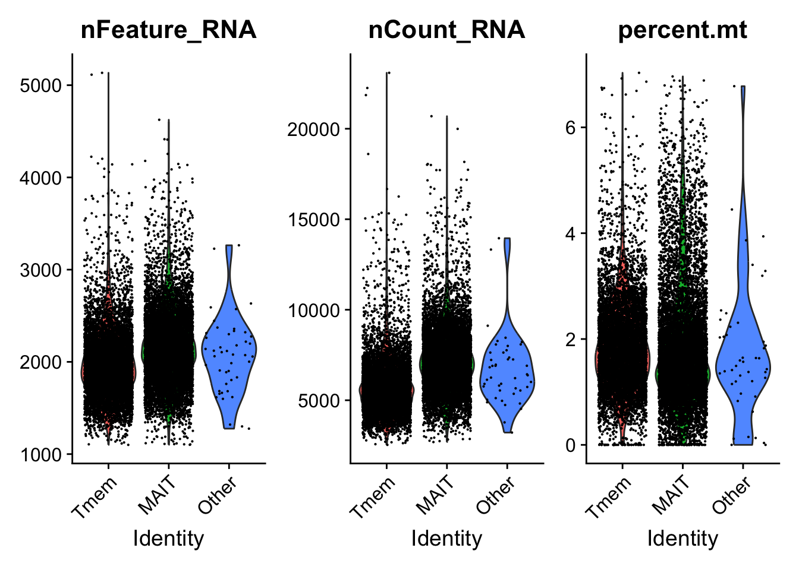
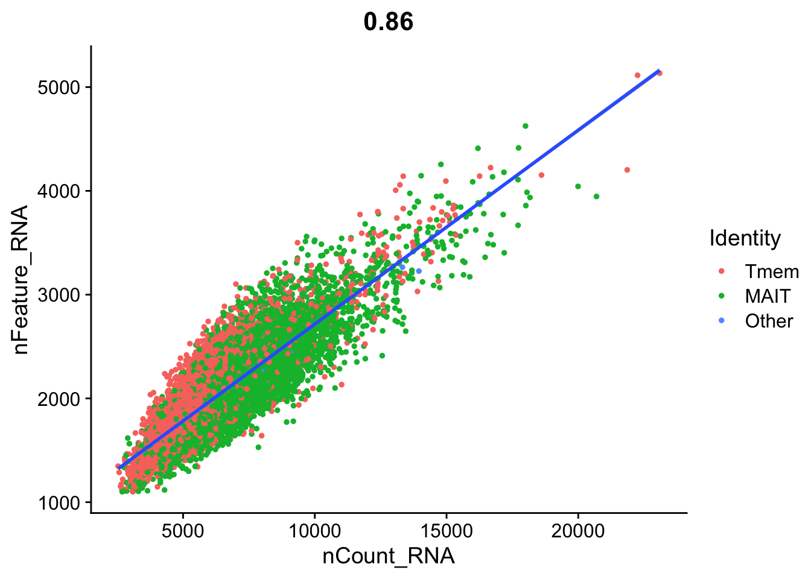
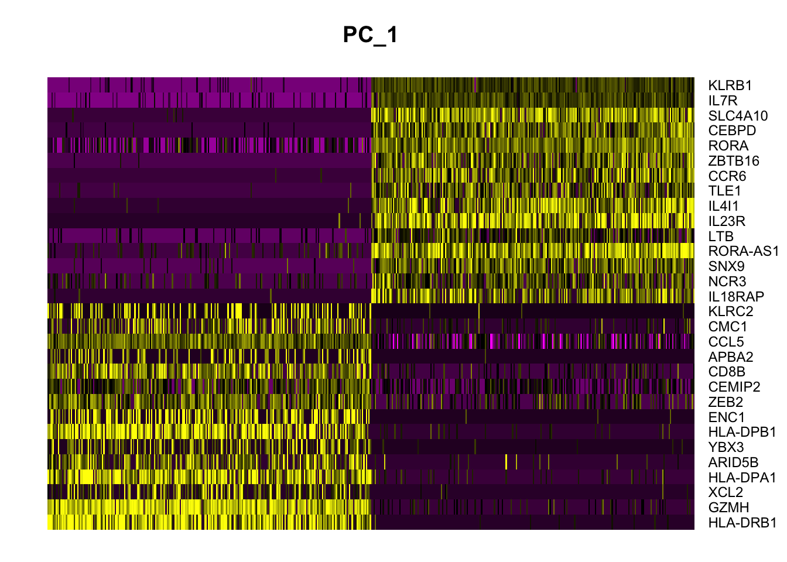
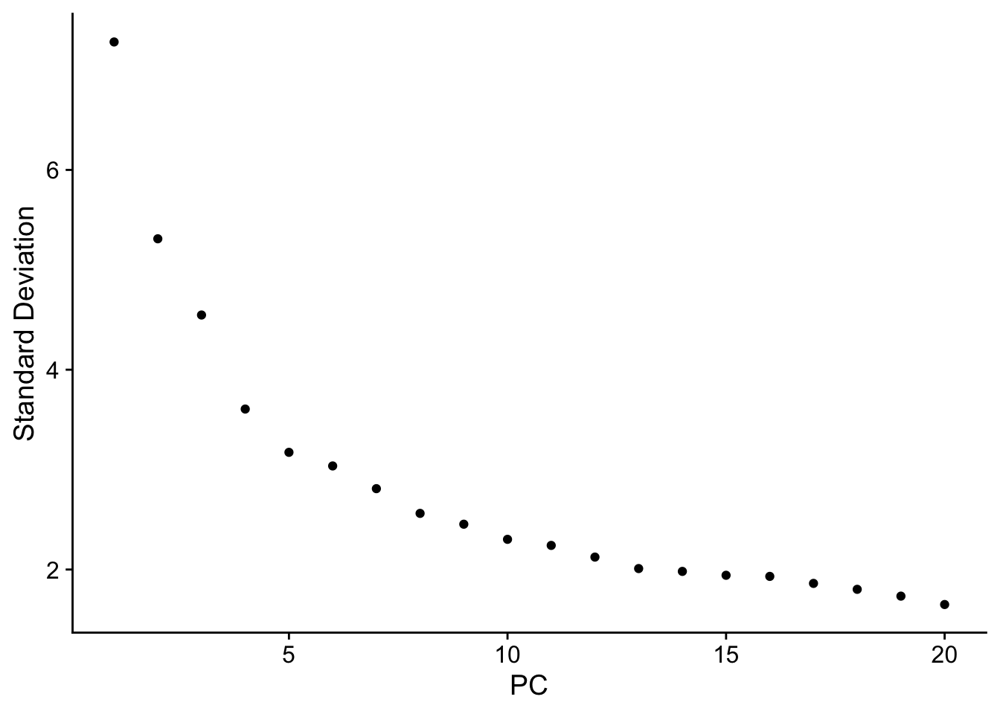
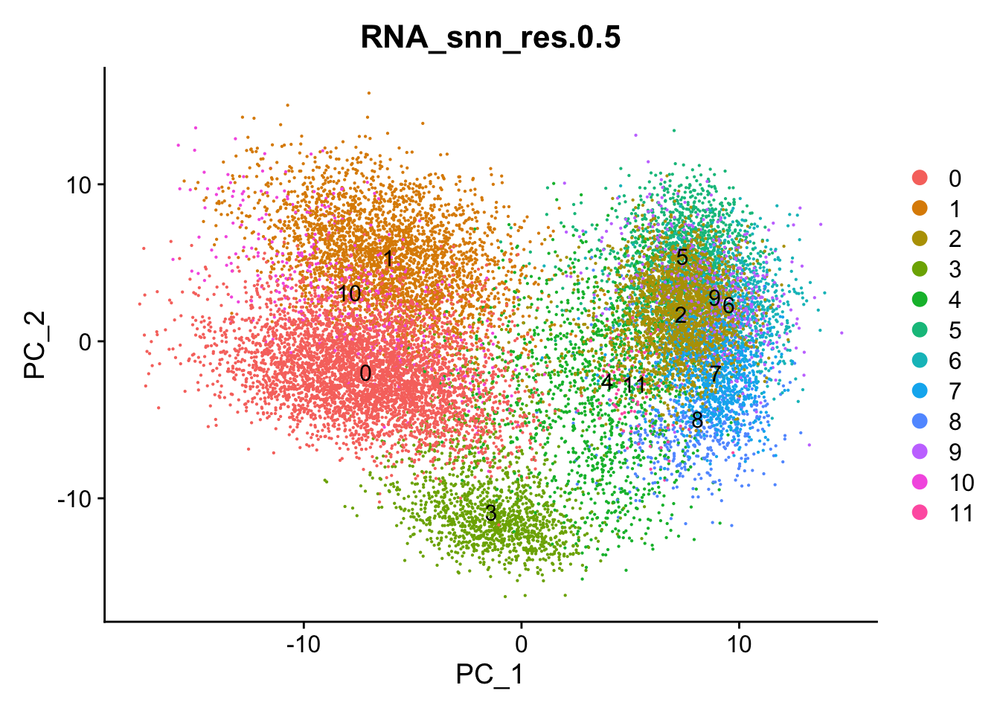
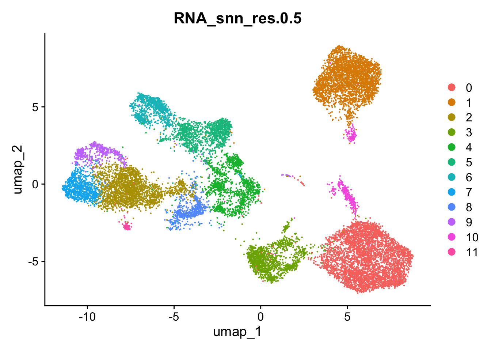

Code
library(Seurat)
library(tidyverse)This is a Quarto document which nicely combines both R code, its results and text explanation to enable an easy and interactive access for both learners, readers and supervisors to such analyses. To learn more about Quarto see https://quarto.org. By default all code lines are blended, but you can show them by clicking on the code button.
For more information about Seurat R package please visit a dedicated documentation page with all details regarding embedded functions and their usage. If you use custom packages in your publications, do not forget to cite them using the information provided at the maintainers web-site.

This is a basic Seurat analysis of scRNA-seq data downstream of CellRanger pipeline. The reference paper authors previously assembled feature count matrix, metadata and row data Seurat object and uploaded it on GEO repository. Analysis in this document is required before annotating specific cell types and analyzing differential gene expression. We aim to have dimensionality reduction data like tSNE or UMAP available for visualizing results further. This analysis was taken from a youtube tutorial almost without modifications, but using current dataset.
For this analysis we need Seurat and tidyverse packages
library(Seurat)
library(tidyverse)Loading our dataset
data.initial <- readRDS("input/GSE238137_blood-liver_MAIT-Tmem_seurat.rds")
data.initialAn object of class Seurat
39947 features across 89456 samples within 5 assays
Active assay: SCT (17646 features, 0 variable features)
3 layers present: counts, data, scale.data
4 other assays present: RNA, ADT, HTO, integrated
2 dimensional reductions calculated: pca, umapLet’s reduce our seurat object until desired cell populations and assays
DefaultAssay(data.initial) <- "RNA" # to allow other assay layers to be deleted
data.initial <- DietSeurat(
data.initial,
features = NULL,
assays = "RNA",
dimreducs = NULL,
graphs = NULL,
misc = TRUE) data.mait.Tmem.2exp <- data.initial[, data.initial$experiment == "Exp 2"]
data.liver.mait.Tmem.2exp <- data.mait.Tmem.2exp[, data.mait.Tmem.2exp$tissue == "Liver"]
data.liver.mait.Tmem.2expAn object of class Seurat
19289 features across 17069 samples within 1 assay
Active assay: RNA (19289 features, 0 variable features)
2 layers present: counts, dataLet’s first calculate the percentage of mitochondrial gene transcripts using build-in Seurat function
data.liver.mait.Tmem.2exp[["percent.mt"]] <- PercentageFeatureSet(data.liver.mait.Tmem.2exp, pattern = "^MT-")
Idents(data.liver.mait.Tmem.2exp) <- data.liver.mait.Tmem.2exp$cell_typePlotting Violin plot showing all information about QC metrics
VlnPlot(data.liver.mait.Tmem.2exp, features = c("nFeature_RNA", "nCount_RNA", "percent.mt"), ncol = 3)
And FeatureScatter plot
FeatureScatter(data.liver.mait.Tmem.2exp, feature1 = "nCount_RNA", feature2 = "nFeature_RNA") +
geom_smooth(method = 'lm')`geom_smooth()` using formula = 'y ~ x'
In our case the authors already performed QC filtering, so we skip this step.
# data.liver.mait.Tmem.2exp <- subset(Garner.Trem.2exp, subset = nFeature_RNA > 200 & nFeature_RNA < 2500 & percent.mt < 5)data.liver.mait.Tmem.2exp[["RNA"]]@meta.features <- data.frame(row.names = rownames(data.liver.mait.Tmem.2exp[["RNA"]])) # Assign to Seurat objects rownames correctly
data <- NormalizeData(data.liver.mait.Tmem.2exp)
data <- FindVariableFeatures(data) top10 <- head(VariableFeatures(data), 10)
top10 [1] "HSPA6" "HSPA1A" "CCL20" "HSPA1B" "CCL4L2" "GNLY" "CCL3L1" "CCL3"
[9] "EGR1" "XCL1" all.genes <- rownames(data)
data <- ScaleData(data, features = all.genes)Centering and scaling data matrixprint(data[["pca"]], dims = 1:5, nfeatures = 5)PC_ 1
Positive: HLA-DRB1, GZMH, XCL2, HLA-DPA1, ARID5B
Negative: KLRB1, IL7R, SLC4A10, CEBPD, RORA
PC_ 2
Positive: NR4A2, ACTB, DUSP2, IER2, PPP1R15A
Negative: MT-ND3, HLA-G, MT-CYB, FTH1, PDE3B
PC_ 3
Positive: METRNL, PPP2R5C, FAM177A1, TUBB4B, VPS37B
Negative: RPS26, TXNIP, MYL12A, ANXA1, CD52
PC_ 4
Positive: DUSP4, COTL1, ZFP36, ATP1B3, ALOX5AP
Negative: NKG7, FGFBP2, FCGR3A, GZMB, GNLY
PC_ 5
Positive: JUND, ZFP36, DUSP2, MAFF, PPP1R15A
Negative: SAMSN1, ARRDC3, MALAT1, GLIPR1, ITK DimHeatmap(data, dims = 1, cells = 500, balanced = TRUE)
ElbowPlot(data) 
Visualize PCA plot with clusters
DimPlot(data, reduction = "pca", group.by = "RNA_snn_res.0.5", label = TRUE)
Idents(data) <- "RNA_snn_res.0.5"Plot UMAP to visualize clusters spatial distribution
DimPlot(data, reduction = "umap", group.by = "RNA_snn_res.0.5")
dataAn object of class Seurat
19289 features across 17069 samples within 1 assay
Active assay: RNA (19289 features, 2000 variable features)
3 layers present: counts, data, scale.data
2 dimensional reductions calculated: pca, umap#saveRDS(data, file = "output/Garner.seurat.2exp.liver.mait_analyzed.rds")